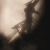
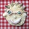

Windows & Tabs API
From Opera 15 onward, Opera 11 & 12’s extension format is no longer supported, and instead, we’ve switched to Chromium’s extension model. Check out our new documentation for developing extensions for Opera 15 and higher and start building your own extensions.
Windows
- opera.extension.windows.create()
- Creates a new browser window.
- opera.extension.windows.getAll()
- Obtains a group of windows (window collection).
- opera.extension.windows.getLastFocused()
- Obtains the currently selected browser window, if any.
- BrowserWindow.insert()
- Inserts a tab or tab group into a browser window.
- BrowserWindow.close()
- Closes a browser window.
- BrowserWindow.focus()
- Gives focus to a browser window.
- BrowserWindow.update()
- Updates the properties of a browser window.
- BrowserWindow.id
- A unique identifier for the browser window.
- BrowserWindow.closed
- Gets the closed state of the browser window.
- BrowserWindow.focused
- Gets and sets the focused state of the browser window.
- BrowserWindow.private
- Gets and sets the private state of the browser window.
- BrowserWindow.tabGroups
- Gets a window tab group manager.
- BrowserWindow.tabs
- Gets a window tab manager.
- BrowserWindow.height
- Sets the height of a browser window.
- BrowserWindow.width
- Sets the width of a browser window.
- BrowserWindow.top
- Sets the top offset of a browser window.
- BrowserWindow.left
- Sets the left offset of a browser window.
Tab Groups
- opera.extension.tabGroups.create()
- Creates a new tab group.
- opera.extension.tabGroups.getAll()
- Obtains a group of tab groups (tab group collection).
- BrowserTabGroup.close()
- Closes a tab group.
- BrowserTabGroup.focus()
- Gives focus to a tab group.
- BrowserTabGroup.insert()
- Inserts a tab into a tab group.
- BrowserTabGroup.update()
- Updates the properties of a tab group.
- BrowserTabGroup.id
- Gets a unique identifier for a tab group.
- BrowserTabGroup.closed
- Gets the closed state of a tab group.
- BrowserTabGroup.collapsed
- Gets or sets the collapsed state of a tab group.
- BrowserTabGroup.browserWindow
- Gets a tab group's context window.
- BrowserTabGroup.tabs
- Gets all open tabs within a tab group.
- BrowserTabGroup.position
- Gets the position of a tab group.
Tabs
- opera.extension.tabs.create()
- Creates a new tab.
- opera.extension.tabs.getAll()
- Obtains a group of tabs (tab collection).
- opera.extension.tabs.getFocused()
- An alias for opera.extension.tabs.getSelected()
- opera.extension.tabs.getSelected()
- Obtains the currently selected tab, if any.
- BrowserTab.close()
- Closes a tab.
- BrowserTab.focus()
- Gives focus to a tab.
- BrowserTab.update()
- Updates the properties of a tab.
- BrowserTab.id
- Gets a unique identifier for a tab.
- BrowserTab.closed
- Gets the closed state of a tab.
- BrowserTab.locked
- Gets and sets the locked state of a tab.
- BrowserTab.private
- Gets and sets the privacy mode of a tab.
- BrowserTab.selected
- Gets the selected state of a tab.
- BrowserTab.readyState
- Gets the current document readiness of a tab.
- BrowserTab.faviconUrl
- Gets the URL of a tab's favicon.
- BrowserTab.title
- Gets the title of a tab.
- BrowserTab.url
- Gets and sets the url of a tab.
- BrowserTab.browserWindow
- Gets a tab's context window.
- BrowserTab.tabGroup
- Gets the tab group for a tab.
- BrowserTab.position
- Gets the position of a tab.
- BrowserTab.focused
- Sets the focused state of a tab.
Overview
A browser window is a graphical user-interface component that can contain zero or more browser tabs or browser tab groups. Each browser window has an associated tab collection and tab group collection. A browser window is the context window of each browser tab and browser tab group within its associated tab collection and tab group collection, respectively. A collection of browser windows is referred to as a window collection.
A browser tab group is a graphical user-interface component contained within a browser window that can contain zero or more browser tabs. Each browser tab group has an associated tab collection and is associated with a context window. A browser tab group is the context tab group of each browser tab within its associated tab collection. A collection of browser tab groups is referred to as the tab group collection.
A browser tab is a graphical user-interface component that represents a single page contained within a browser window. Each browser tab is associated with a browser window and might be associated with a browser tab group. A user can switch between browser tabs to access different pages. Selecting a browser tab brings that page into focus. A collection of browser tabs is referred to as the tab collection.
Example
The following example adds a button the browser toolbar. Clicking the button creates a tab group in a collapsed state containing two tabs. Each tab has a specified URL and one of them is a private tab.
<!--
The configuration file ('config.xml').
-->
<?xml version='1.0' encoding='utf-8'?>
<widget xmlns="http://www.w3.org/ns/widgets" id="http://example.com/testextension" defaultlocale="en">
<name>Windows & Tabs test extension</name>
<description>A test extension that opens a tab group containing two tabs.</description>
<icon src="images/icon_64.png"/>
<icon src="images/icon_18.png"/>
</widget>//
// The background process (e.g. index.html)
//
// Specify the properties of the button before creating it.
var UIItemProperties = {
disabled: false,
title: "Tab creation test",
icon: "images/icon_18.png",
onclick: function() {
// Create two tabs with specified URLs
var tab1 = opera.extension.tabs.create({url: 'http://dev.opera.com/'});
var tab2 = opera.extension.tabs.create({url: 'http://www.operamail.com/', private: true});
// Create a tab group containing the above two tabs
var tabGroup = opera.extension.tabGroups.create([tab1, tab2], {collapsed: true});
}
};
// Create the button and add it to the toolbar.
var button = opera.contexts.toolbar.createItem( UIItemProperties );
opera.contexts.toolbar.addItem(button);This article is licensed under a Creative Commons Attribution 3.0 Unported license.
Comments
-

Just as a warning to other developers, it is my experience that in Opera 12.00 build 1387 and prior, the tabs API does not behave properly when an extension is in developer mode and its popup is open. The two issues I have run into are:
-
Is this API not yet fully implemented in Opera 12.00 beta? The "private", "selected", and "locked" properties of tabs cannot be set, and the "focused" property of a tab doesn't exist.
-
Any plans to fix DSK-327967 (Closing tabs opened in the background will activate the last active tab even if you have selected "Activate the next tab") and DSK-333113 (Created tabs doesn't keep the zoom level)
-
@Joel: thanks for reporting the bugs with the tabs.getSelected() and tabs.getAll() issues. We're looking into it.
-
@Pablo: we're looking into those two bugs.
-
Cool.
-

@Joel
-

@Joel: Regarding the "private" property, this is not readonly as it can be set when creating a new tab. In other words, it sets the property when used with the create() method but has no effect when used with the update() method. This is specified in the property's documentation page: http://dev.opera.com/articles/view/extensions-api-tab-private/
-
The documentation specific to the "private" property is fine. This page, however, states that BrowserTab.private "Gets and sets the privacy mode of a tab."
-

Is there any way to set the little blue pin/dot on a tab? I read that it changes when there is new content, but that doesn't seem to be the case with the Google Voice page, so I want to make an extension to notify the user of new texts.
-
As far as I can tell, setting opera.extension.tabs.oncreate irreversibly breaks tabs' "url" and "readyState" properties. Both are undefined in the creation event and stay undefined even after the tab has fully loaded. I reported this as DSK-362845 a while back, and looks like it's still around in the Opera 12 release.
-
Also, it would be nice if the tab creation event had a property to get the tab which created the new tab. This would also allow you to tell if the tab was created by the New Tab button or an external program, since it wouldn't have a creator tab in those cases.
-

Hi, what I miss most of all is "tab" property on message event object in background process. Right now there is no 100% reliable way to determine what tab sent the message to background process. Reported as DSK-368615.
-

"unstack" method on tab group would be nice as well.
-
Do we have any control of how the window appears? In particular the ability to remove toolbars / statusbar/ tab bar etc..
-
Yes, agree with "tab" property on message event object in background process. Really need to focus a particular tab, but there's no way to get to it.
-

I would expect calling "event.preventDefault()" in tab group listener for "oncreate" would prevent creating the tab stack. (Same for creating tab/window)
-
var currentTab = opera.extension.tabs.getSelected();
-

For 12.50 build 1577, first non-labs snapshot with SPDY support, there is a property
-
Is there a way to handle active tab changed event?
-
All this is good but is it possible to thwart/circumvent the dreaded shrinking and left-shifting of locked/pinned tabs?
-

Please , can anybody here explain if there is any way to hide a tab without actually closing it?
No new comments accepted.Joel Spadin
Thursday, April 26, 2012
opera.extension.tabs.getSelected() returns a tab object with undefined browserWindow, locked, position, selected, tabGroup, and title. The other properties appear to work normally.
opera.extension.tabs.getAll() returns an array containing one extra tab, which I assume belongs to the extension popup. Attempting to access this tab will fail with an "Out of memory; script terminated" error. I have not found any workaround for this, as try...catch does not catch the error.
I have reported this as DSK-362025.
Joel Spadin
Sunday, April 29, 2012
Edit: It looks like the "focused" property can only be set when creating a tab. The actual BrowserTab object has no such property, nor does calling update() with a new value for "focused" do anything. If this is the intended behavior, this page of documentation should be changed to reflect this, as right now it seems to be saying that BrowserTab objects should have a settable "focused" property.
Pablo Belluccia
Wednesday, May 2, 2012
Arnstein Teigene
Monday, May 7, 2012
Regarding your second comment, private, selected, focused and locked are read only which is specified by the documentation. All of them except private can be set using update method. Focused not being present has been fixed and a bugfix will be ready in Opera 12 soon.
Arnstein Teigene
Monday, May 7, 2012
Joel Spadin
Tuesday, May 8, 2012
If private cannot be set using the update method, the documentation should be updated as it currently states "BrowserTab.private » Gets and sets the privacy mode of a tab."
Also, another bug to watch out for: (DSK-363078) If you try to create a new group which contains tabs that are already part of a group, strange things happen. I've provided a workaround (as well as a number of useful functions) here on Github.
Chris Mills
Wednesday, May 9, 2012
Thanks for the feedback Joel - we are working to fix that bug asap. As for private being read only, this is by design. So I'm not sure if this needs an update? Or am I misunderstanding?
Daniel Davis
Thursday, May 10, 2012
Joel Spadin
Saturday, May 12, 2012
pyrohacker
Saturday, June 2, 2012
And what does "new content" mean?
Joel Spadin
Sunday, June 17, 2012
Joel Spadin
Sunday, June 17, 2012
My AutoStack extension currently assumes that the previously focused tab was the creator and that tabs with certain titles (Speed Dial, Extensions, etc.) aren't opened from other tabs and thus shouldn't be stacked. Knowing which tab created the new tab would make this much more robust.
Martin Kadlec
Wednesday, June 27, 2012
Martin Kadlec
Wednesday, June 27, 2012
Matthew Wilcoxson
Thursday, July 5, 2012
Spadar Shut
Saturday, July 7, 2012
Martin Kadlec
Wednesday, July 11, 2012
DonySuXX
Saturday, July 21, 2012
if (currentTab) {
currentTab.postMessage("UPD_TAB"); <----- DOESN'T WORK in 12 !!!
}
XenoAntares
Tuesday, August 28, 2012
bool BrowserTab.loadedWithSPDY
(used in Opera's SPDY indicator extension).
Tёm@ Shabs-from-UABS
Thursday, November 1, 2012
Amenel
Friday, November 2, 2012
Alouette
Wednesday, January 16, 2013
(i.e. still keeping in memory and in the autosave.win)
And it is possible to catch a "new tab creation" event from user?